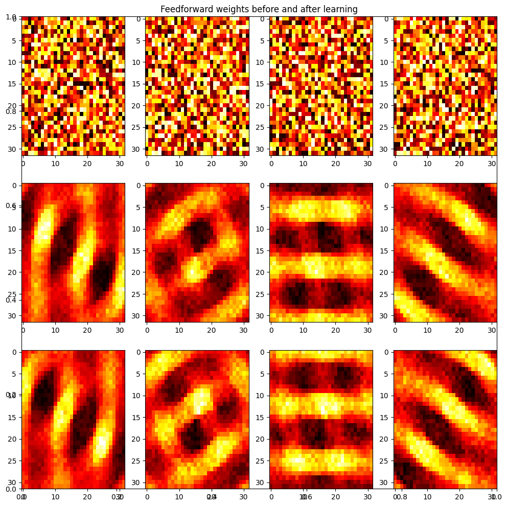
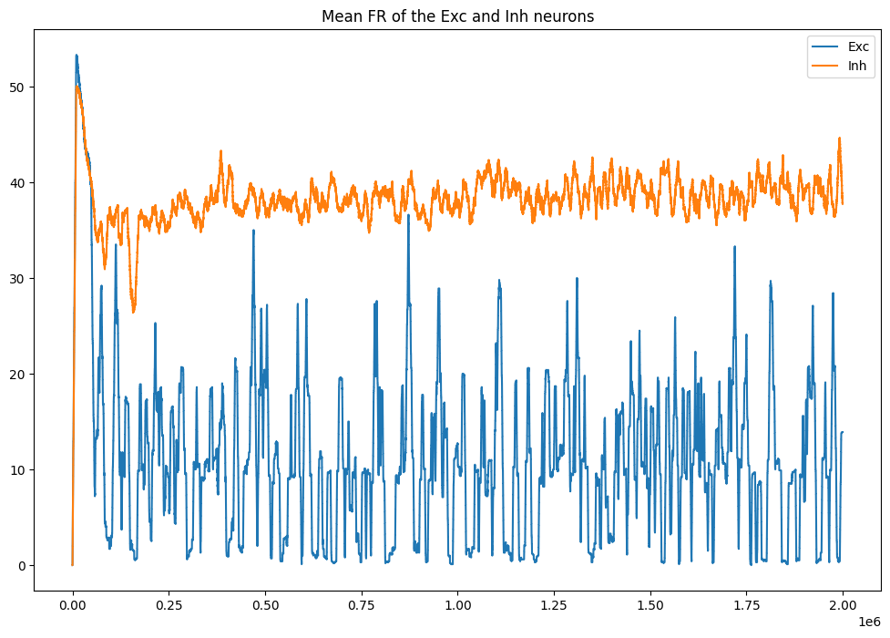
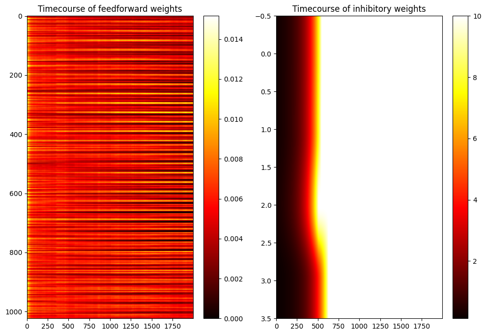

#!pip install ANNarchyHomeostatic STDP: SORF model


Reimplementation of the SORF model published in:
Carlson, K.D.; Richert, M.; Dutt, N.; Krichmar, J.L., “Biologically plausible models of homeostasis and STDP: Stability and learning in spiking neural networks,” in Neural Networks (IJCNN), The 2013 International Joint Conference on , vol., no., pp.1-8, 4-9 Aug. 2013. doi: 10.1109/IJCNN.2013.6706961
import numpy as np
import matplotlib.pyplot as plt
import ANNarchy as ann
from tqdm import tqdmANNarchy 5.0 (5.0.0) on darwin (posix).Hyperparameters:
nb_neuron = 4 # Number of exc and inh neurons
size = (32, 32) # input size
freq = 1.2 # nb_cycles/half-image
nb_stim = 40 # Number of grating per epoch
nb_epochs = 20 # Number of epochs
max_freq = 28. # Max frequency of the poisson neurons
T = 10000. # Period for averaging the firing rateNeuron type:
# Izhikevich Coba neuron with AMPA, NMDA and GABA receptors
RSNeuron = ann.Neuron(
parameters = dict(
a = 0.02,
b = 0.2,
c = -65.,
d = 8.,
tau_ampa = 5.,
tau_nmda = 150.,
tau_gabaa = 6.,
tau_gabab = 150.,
vrev_ampa = 0.0,
vrev_nmda = 0.0,
vrev_gabaa = -70.0,
vrev_gabab = -90.0,
) ,
equations = [
# Inputs
ann.Variable("""
I = g_ampa * (vrev_ampa - v) + g_nmda * nmda(v, -80.0, 60.0) * (vrev_nmda -v) + g_gabaa * (vrev_gabaa - v) + g_gabab * (vrev_gabab -v)
"""),
# Midpoint scheme
ann.Variable("dv/dt = (0.04 * v + 5.0) * v + 140.0 - u + I", init=-65., min=-90., method='midpoint'),
ann.Variable("du/dt = a * (b*v - u)", init=-13., method='midpoint'),
# Conductances
ann.Variable("tau_ampa * dg_ampa/dt = -g_ampa", method='exponential'),
ann.Variable("tau_nmda * dg_nmda/dt = -g_nmda", method='exponential'),
ann.Variable("tau_gabaa * dg_gabaa/dt = -g_gabaa", method='exponential'),
ann.Variable("tau_gabab * dg_gabab/dt = -g_gabab", method='exponential'),
],
spike = "v >= 30.",
reset = """
v = c
u += d
g_ampa = 0.0
g_nmda = 0.0
g_gabaa = 0.0
g_gabab = 0.0
""",
functions = """
nmda(v, t, s) = ((v-t)/(s))^2 / (1.0 + ((v-t)/(s))^2)
""",
refractory=1.0
)Synapse:
# STDP with homeostatic regulation
homeo_stdp = ann.Synapse(
parameters=dict(
# STDP
tau_plus = 60.,
tau_minus = 90.,
A_plus = 0.000045,
A_minus = 0.00003,
# Homeostatic regulation
alpha = 0.1,
beta = 50.0, # <- Difference with the original implementation
gamma = 50.0,
Rtarget = 10.,
T = 10000.,
),
equations = [
# Homeostatic values
ann.Variable("R = post.r", locality='semiglobal'),
ann.Variable("K = R/(T * (1. + fabs(1. - R / Rtarget) * gamma))", locality='semiglobal'),
# Nearest-neighbour
ann.Variable("stdp = if t_post >= t_pre: ltp else: - ltd"),
ann.Variable("w += (alpha * w * (1- R/Rtarget) + beta * stdp ) * K", min=0.0, max=10.0),
# Traces
ann.Variable("tau_plus * dltp/dt = -ltp", method="exponential"),
ann.Variable("tau_minus * dltd/dt = -ltd", method="exponential"),
],
pre_spike="""
g_target += w
ltp = A_plus
""",
post_spike="ltd = A_minus"
)Network:
# Network
net = ann.Network()
# Input population
OnPoiss = net.create(ann.PoissonPopulation(size, rates=1.0))
OffPoiss = net.create(ann.PoissonPopulation(size, rates=1.0))
# RS neuron for the input buffers
OnBuffer = net.create(size, RSNeuron)
OffBuffer = net.create(size, RSNeuron)
# Connect the buffers
OnPoissBuffer = net.connect(OnPoiss, OnBuffer, ['ampa', 'nmda'])
OnPoissBuffer.one_to_one(ann.Uniform(0.2, 0.6))
OffPoissBuffer = net.connect(OffPoiss, OffBuffer, ['ampa', 'nmda'])
OffPoissBuffer.one_to_one(ann.Uniform(0.2, 0.6))
# Excitatory and inhibitory neurons
Exc = net.create(nb_neuron, RSNeuron)
Inh = net.create(nb_neuron, RSNeuron)
Exc.compute_firing_rate(T)
Inh.compute_firing_rate(T)
# Input connections
OnBufferExc = net.connect(OnBuffer, Exc, ['ampa', 'nmda'], homeo_stdp)
OnBufferExc.all_to_all(ann.Uniform(0.004, 0.015))
OffBufferExc = net.connect(OffBuffer, Exc, ['ampa', 'nmda'], homeo_stdp)
OffBufferExc.all_to_all(ann.Uniform(0.004, 0.015))
# Competition
ExcInh = net.connect(Exc, Inh, ['ampa', 'nmda'], homeo_stdp)
ExcInh.all_to_all(ann.Uniform(0.116, 0.403))
ExcInh.Rtarget = 75.
ExcInh.tau_plus = 51.
ExcInh.tau_minus = 78.
ExcInh.A_plus = -0.000041
ExcInh.A_minus = -0.000015
InhExc = net.connect(Inh, Exc, ['gabaa', 'gabab'])
InhExc.all_to_all(ann.Uniform(0.065, 0.259))
net.compile()Compiling network 1... OK # Inputs
def get_grating(theta):
x = np.linspace(-1., 1., size[0])
y = np.linspace(-1., 1., size[1])
xx, yy = np.meshgrid(x, y)
z = np.sin(2.*np.pi*(np.cos(theta)*xx + np.sin(theta)*yy)*freq)
return np.maximum(z, 0.), -np.minimum(z, 0.0)
# Initial weights
w_on_start = OnBufferExc.w
w_off_start = OffBufferExc.w
# Monitors
m = net.monitor(Exc, 'r')
n = net.monitor(Inh, 'r')
o = net.monitor(OnBufferExc[0], 'w', period=1000.)
p = net.monitor(ExcInh[0], 'w', period=1000.)
# Learning procedure
from time import time
import random
tstart = time()
stim_order = list(range(nb_stim))
for epoch in tqdm(range(nb_epochs)):
random.shuffle(stim_order)
for stim in stim_order:
# Generate a grating randomly
rates_on, rates_off = get_grating(np.pi*stim/float(nb_stim))
# Set it as input to the poisson neurons
OnPoiss.rates = max_freq * rates_on
OffPoiss.rates = max_freq * rates_off
# Simulate for 2s
net.simulate(2000.)
# Relax the Poisson inputs
OnPoiss.rates = 1.
OffPoiss.rates = 1.
# Simulate for 500ms
net.simulate(500.)
print('Done in ', time()-tstart)
# Recordings
datae = m.get('r')
datai = n.get('r')
dataw = o.get('w')
datal = p.get('w')100%|██████████| 20/20 [01:40<00:00, 5.05s/it]Done in 101.01462006568909# Final weights
w_on_end = OnBufferExc.w
w_off_end = OffBufferExc.w
# Plot
plt.figure(figsize=(12, 12))
plt.title('Feedforward weights before and after learning')
for i in range(nb_neuron):
plt.subplot(3, nb_neuron, i+1)
plt.imshow((np.array(w_on_start[i])).reshape((32,32)), aspect='auto', cmap='hot')
plt.subplot(3, nb_neuron, nb_neuron + i +1)
plt.imshow((np.array(w_on_end[i])).reshape((32,32)), aspect='auto', cmap='hot')
plt.subplot(3, nb_neuron, 2*nb_neuron + i +1)
plt.imshow((np.array(w_off_end[i])).reshape((32,32)), aspect='auto', cmap='hot')
plt.figure(figsize=(12, 8))
plt.plot(datae[:, 0], label='Exc')
plt.plot(datai[:, 0], label='Inh')
plt.title('Mean FR of the Exc and Inh neurons')
plt.legend()
plt.figure(figsize=(12, 8))
plt.subplot(121)
plt.imshow(np.array(dataw, dtype='float').T, aspect='auto', cmap='hot')
plt.title('Timecourse of feedforward weights')
plt.colorbar()
plt.subplot(122)
plt.imshow(np.array(datal, dtype='float').T, aspect='auto', cmap='hot')
plt.title('Timecourse of inhibitory weights')
plt.colorbar()
plt.show()

